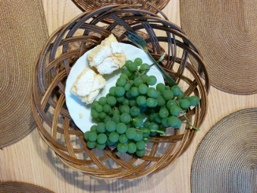

Już nasi dalecy przodkowie wiedzieli co dobre. W odległych czasach, w różnych krajach ludzie raczyli swe podniebienia słodkimi pysznościami. I choć nie istniały sklepy z półkami wypełnionymi po brzegi czekoladowymi, marcepanowymi czy lukrowanymi łakociami w kolorowych opakowaniach – starożytni mieszkańcy naszego świata radzili sobie bez nich znakomicie. Kiedy jeszcze nie był znany cukier z buraków czy trzciny rolę słodyczy pełniły owoce i orzechy maczane w miodzie. Podobno pierwsi „wynaleźli” słodycze Egipcjanie 4000 lat temu. Mieszkańcy kraju faraonów do wymienionych wyżej specjałów oprócz miodu dodawali słodkie ziarna z drzewa świętojańskiego. Natomiast w starożytnej Grecji i Rzymie w miodzie obtaczano nie tylko owoce i orzechy, ale także kwiaty i łodygi roślin. Jak głosi legenda pierwsze cukierki zostały wymyślone przez rzymskiego niewolnika, który stworzył je na cześć swojego pana. Ale drażetki nie rozpowszechniły się w Imperium Romanum – ich smakiem mogli cieszyć się
jedynie arystokraci.
W ascetycznym średniowieczu nie było zbyt wiele miejsca na słodkości. Ale w niektórych środowiskach raczono się nimi regularnie. Na dworze bizantyjskiego cesarza Konstantyna VII Porfirogenety jadano galaretki oraz konfitury z gruszek, jabłek, pigwy, śliwek czy róży. Dla średniowiecznej kuchni charakterystyczny był również deser składający się z grzanego wina, drażetek oraz dojrzałego sera. Potrawa przez całe tysiąclecie ewoluowała i pod koniec epoki dodawano do niej coraz częściej owoce obtoczone w cukrze, syropie i miodzie oraz owocowe pasty. Znane były również naleśniki z cukrem, custard (słodki sos angielski), wafle, ciasta czy dania z mleczka migdałowego. Co jest warte podkreślenia: początkowo cukier był traktowany jako lekarstwo. Łączony z rozmaitymi przyprawami miał zapobiegać dolegliwościom układu pokarmowego. Dopiero z czasem doceniono walory smakowe cukru i zaczęto go stosować w kuchni, ale ze względu na jego bardzo wysoką cenę słodkie dania były zarezerwowane dla elit.
